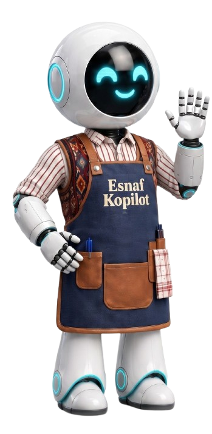
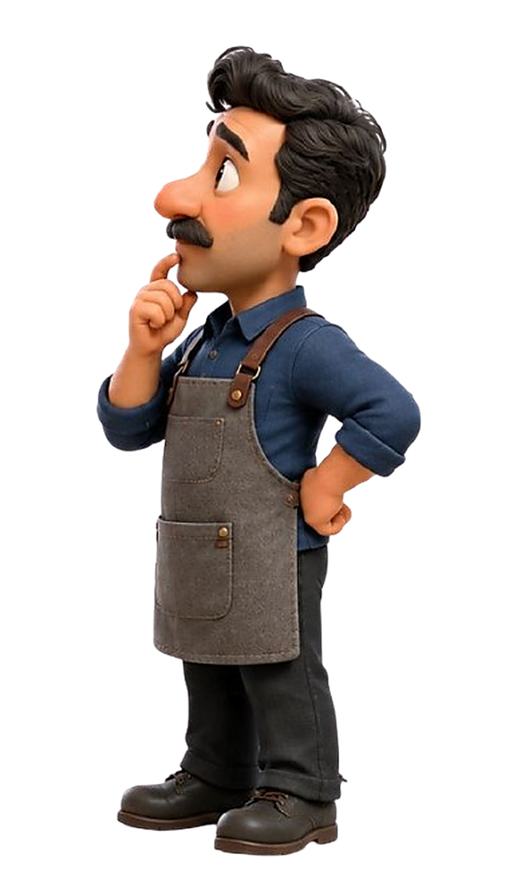
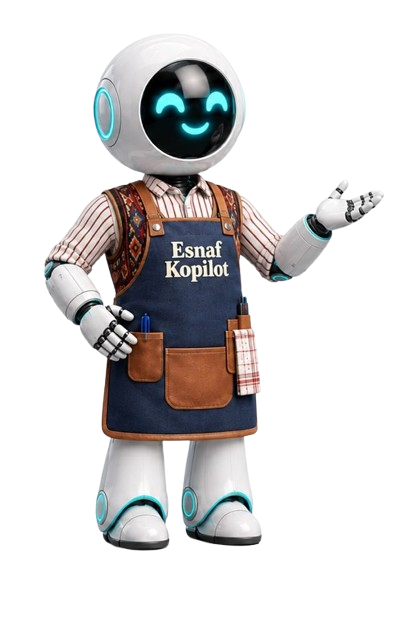
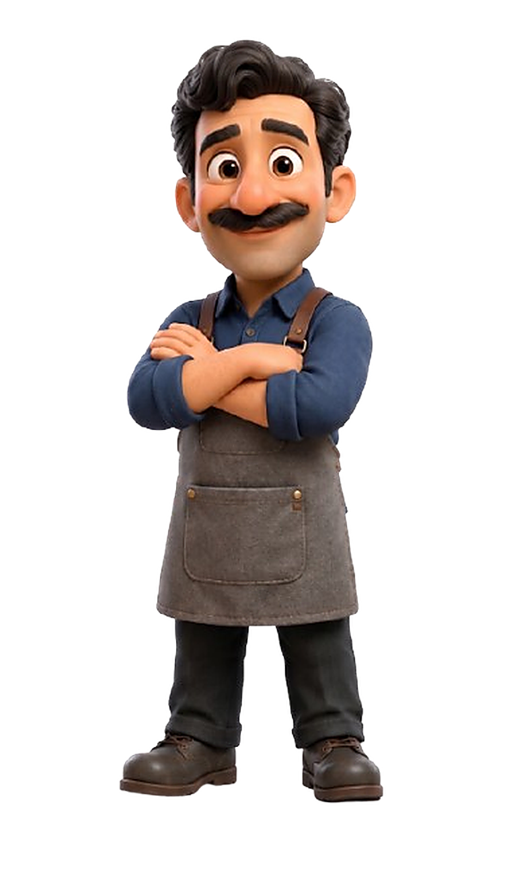
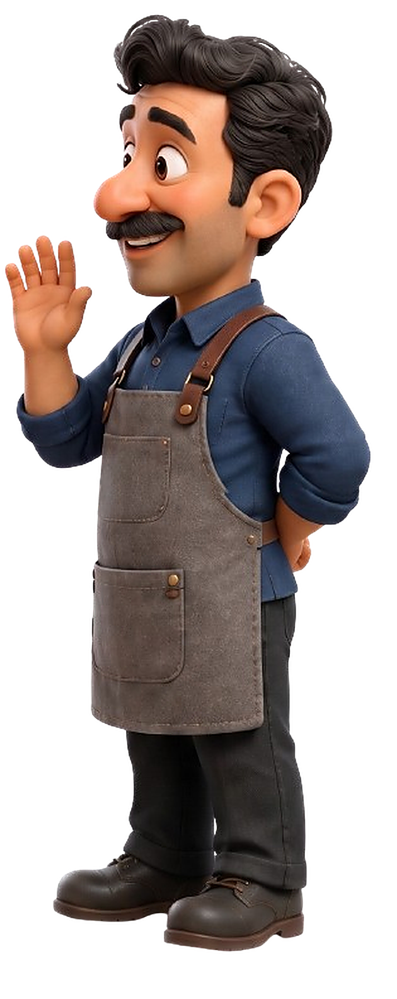
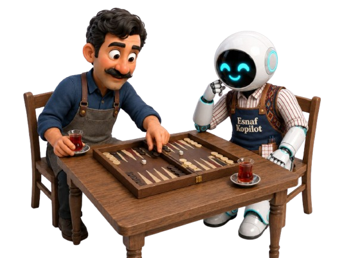
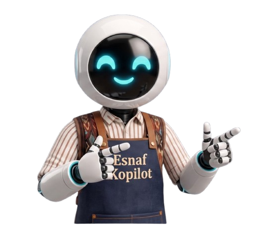

Gel göstereyim!

Esnaf K pilot
Ne hizmet sunuyorsunuz?

Biz senin ürününü anlayıp analiz ederiz...

Esnaf Kopilot Özellikleri
🔍 Ürün Analizi
Linki yapıştırın, yapay zekamız tüm içeriği analiz etsin.
🚀 SEO & AEO
Arama motorları için başlık ve açıklamalarınızı kusursuzlaştırır.
📊 Rakip Benchmark
Sektördeki en iyi satıcılarla karşılaştırır, eksikleri gösterir.
Peki nasıl çalışıyor?

Bak böyle çalışır!
Nasıl Çalışır?
Hemen denemek isterim

01
Link Ver
02
AI Analizi
03
Öneriler
04
Uygula
05
Kazan




Şimdi Deneyin
Rakipleriniz yapay zekayı kullanmaya başladı bile. Hemen analiz yaparak fark yaratın.